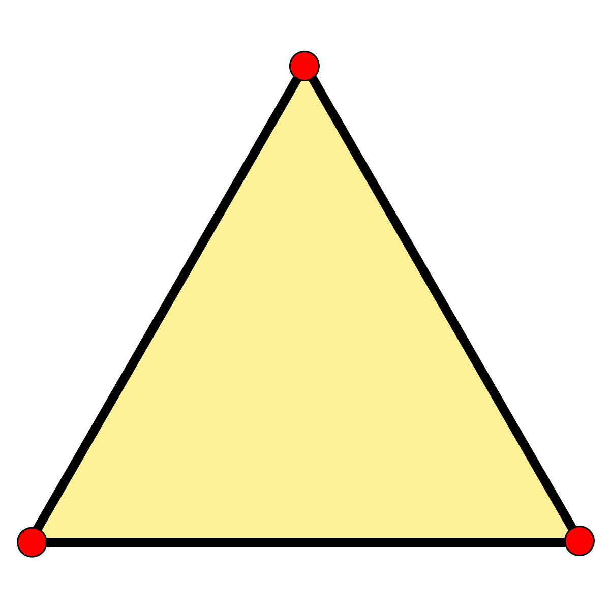

Tríngulo Equilatero

Cuando los tres lados del triángulo son iguales, estamos ante un triángulo equilátero. Esto quiere decir que los tres lados del triángulo equilátero tienen la misma longitud; por lo tanto, miden igual.
Los triángulos equiláteros, a su vez, son equiangulares ya que sus tres ángulos internos también miden lo mismo (60º). Como estos tres ángulos son agudos debido a que miden menos de 90º, se trata de triángulos acutángulos.